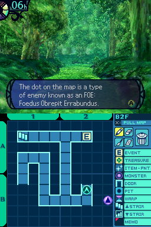
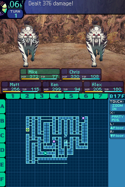
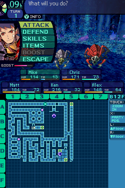
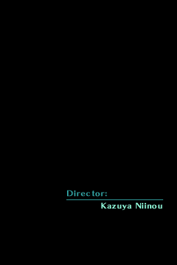
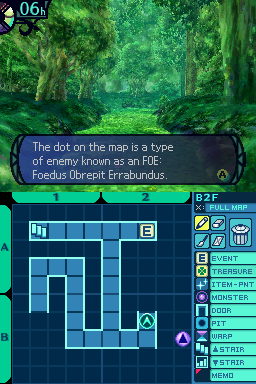
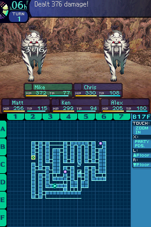
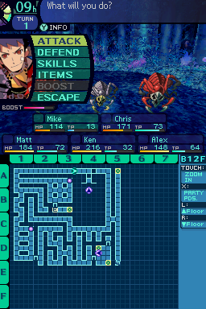
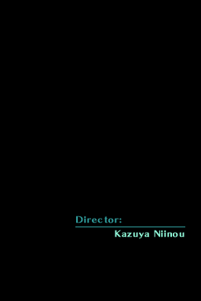

Etrian Odyssey

Complete on 2022-06-18
4 / 5
Release Date: May 15, 2007
Meta Score: 75
Screenshots
 







Notes
Well I rambled last time about the extremes of DS game ports and the randomizer gods have given me a third interesting data point. Etrian Odyssey is fairly unique as a game that only works as well as it does on the DS, without feeling like a gimmicky use of hardware. Having seperate touch screen and main screen provides the perfect setup for dungeon crawling on the top while mapping on the bottom, and buttons provide the controls you want for the gameplay.
Etrian Odyssey is a harsh game. Particularly during the first few levels you can easily have a character die or even wipe out if you get unlucky in a single fight. I used emulator save states to smooth this out a bit with extra checkpoints and it improved my experience a lot I think.
There are a lot of quality of life features missing from EO1 that must have been added in later games. A lot of the menus are a little clunky, and you can't even sidestep with the shoulder buttons.
The structure of the game is one giant 25 floor dungeon which you progress through pretty linearly. Each 5 floors there's a boss and then a convenient fast travel point. You do end up retreading floors quite a few times, which gets a little annoying but it does line up with encouraging you to map carefully, so I'm not sure how I feel about it. Interestingly if you die in the dungeon it's a hard game over, but you do get to save your map data.
The game basically needs to balance on a knife edge in order to create a satisfying challenge without falling into being frustrating. I think it mostly succeeds, although the early game can be rough and the balance of different classes isn't 100% dialled in.
There's a bunch of stuff that's janky, and the balance of classes isn't great. I looked up some tips online and that gave me a relatively smooth experience but without that you could easily end up with a dead end party.
The environment design gets a little stale. On the one hand, having a giant forest dungeon is fairly unique. Unfortunately the game goes with "forest", "dense forst", "blue forest", "sandy desert forest" making up the environments for most of the game. To be fair, the 5th stratum does change it up fairly dramatically (with a little bit of forest vibes remaining).
The mapping tools are a touch lacking in this installment. In particular one stage is effectively a conveyor belt maze and there's no way to notate the conveyors. A few other icons in certain places would have gone a long way too.
The story is quite light for most of the game but really kicks into high gear right near the end.
The final boss is kind of bullshit, and beating it seemed to require a ton of grinding and possibly rejigging my party significantly. I ended up using cheats to get over the line, no regrets.
Overall, I think Etrian Odyssey manages to pull it off. It has a lot of issues but the core game is there and is good. It went on a little too long but not so long that I rage quit. I know that when we get all the way to the later 3DS titles massive improvements have been made, so I'm interested to find out how the series evolves over 2 and 3 which are part of the DS challenge list.